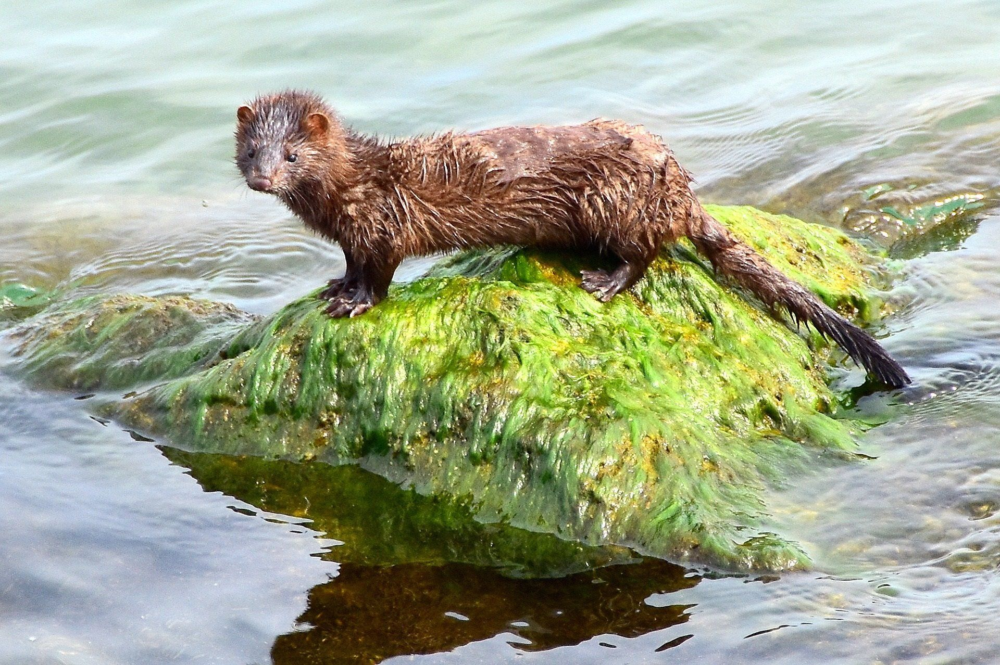

Una invasión biológica ocurre cuando una especie (planta, animal, hongo o microorganismo) es introducida de forma accidental o intencional en un ecosistema fuera de su área de distribución original, logrando adaptarse, reproducirse y expandirse hasta el punto de alterar el equilibrio del nuevo entorno y causar graves daños.
A estas especies se les conoce como Especies Exóticas Invasoras (EEI). No todas las especies introducidas se vuelven invasoras; para que ocurra una invasión, el organismo debe superar con éxito varias etapas.
El proceso se puede entender como un filtro de fases consecutivas:
Transporte: El ser humano traslada a la especie fuera de su frontera nativa (por comercio, turismo, agua de lastre de barcos, etc.).
Introducción: La especie es liberada o se escapa en el nuevo entorno.
Establecimiento: Consigue sobrevivir y reproducirse de forma autónoma, superando las condiciones climáticas locales.
Expansión (Invasión): Se dispersa rápidamente por el territorio, compitiendo de manera agresiva con las especies nativas.
Las invasiones biológicas son consideradas la segunda causa más importante de pérdida de biodiversidad en el mundo, solo por detrás de la destrucción de hábitats. Sus consecuencias se dividen en tres grandes áreas:
Competencia y depredación: Desplazan a las especies locales al quitarles recursos (alimento, luz, espacio) o al depredarlas de forma masiva (las especies nativas muchas veces no saben cómo defenderse de ellas).
Alteración de hábitats: Pueden cambiar las propiedades del suelo, los ciclos del agua o la frecuencia de incendios.
Transmisión de enfermedades: Suelen portar parásitos o virus para los cuales la fauna o flora local no tiene defensas.
Causan pérdidas millonarias en la agricultura y ganadería al convertirse en plagas difíciles de erradicar.
Dañan infraestructuras (por ejemplo, moluscos invasores que tapan tuberías de plantas hidroeléctricas o plantas acuáticas que obstruyen ríos navegables).
Algunas especies invasoras son vectores de nuevas enfermedades humanas o provocan alergias y picaduras graves que alteran la vida cotidiana.
Ya que en proyectos como ACUAMAR se vigila la salud del agua, las invasiones en costas, ríos y lagos son de las más destructivas y difíciles de controlar:
El Pez León (Pterois volitans): Originario del Indo-Pacífico, fue introducido en el Atlántico y se expandió de forma masiva por el Caribe mexicano (incluyendo Quintana Roo). Es un depredador voraz que devora peces juveniles de arrecife y no tiene depredadores naturales en esta región.
El Lirio Acuático (Eichhornia crassipes): Planta sudamericana que hoy invade lagos, cenotes y ríos de todo México. Crece con tanta rapidez que forma alfombras densas sobre el agua, impidiendo que entre la luz solar y el oxígeno, lo que asfixia a los peces y plantas nativas.
El Mejillón Cebra (Dreissena polymorpha): Un pequeño molusco de Europa del Este que viajó en los tanques de agua de los barcos. Se adhiere a cualquier superficie sólida en ríos y lagos, alterando la cadena alimenticia y destruyendo tuberías e infraestructura hidráulica.
El manejo de las invasiones biológicas sigue una jerarquía estricta:
Prevención (La más efectiva): Inspecciones estrictas en aduanas, puertos y aeropuertos para evitar el ingreso de organismos prohibidos.
Detección temprana y respuesta rápida: Localizar los primeros focos de la especie antes de que su población se descontrole.
Control y erradicación: Si ya se establecieron, se usan métodos físicos (caza, pesca, retiro manual), químicos o control biológico para reducir su impacto, aunque erradicarlas por completo suele ser sumamente costoso y complejo.

| PELIGRO DE EXTINCIÓN |